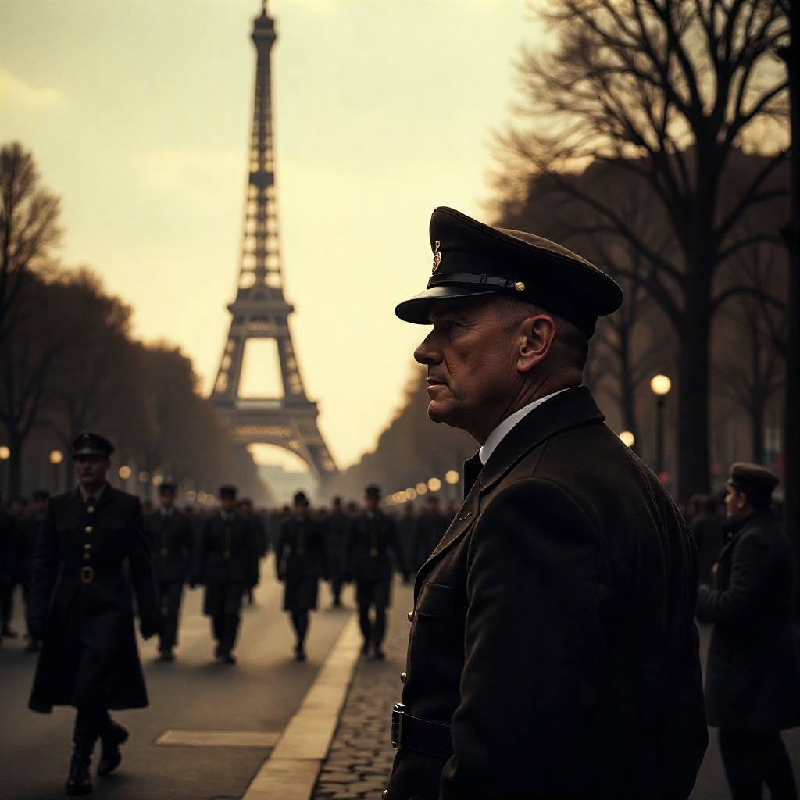

París – Segunda Guerra Mundial
Recorre la ciudad luz en tiempos de oscuridad. Vive la ocupación nazi y la posterior liberación, mientras escuchas los ecos de la resistencia y el júbilo de la libertad recuperada.
Iniciar Viaje

Contexto histórico
En junio de 1940, París cayó bajo la ocupación nazi. La ciudad quedó marcada por carteles en alemán, patrullas armadas y la bandera del Tercer Reich ondeando sobre la Torre Eiffel. Sin embargo, en las sombras, la Resistencia Francesa tejía redes clandestinas, distribuyendo panfletos, mensajes ocultos y organizando sabotajes.
En agosto de 1944, tras años de miedo y censura, la insurrección del pueblo parisino junto a las fuerzas aliadas devolvió la libertad a la ciudad. París volvió a ser símbolo de esperanza y resistencia frente a la opresión.
¿Qué vivirás en VR?
- Caminarás por los Campos Elíseos viendo carteles en alemán y soldados marchando bajo la bandera nazi.
- Escucharás susurros de resistencia en cafés clandestinos y descubrirás mensajes ocultos en muros y periódicos.
- Vivirás la Liberación de París con barricadas, disparos, campanas sonando y el júbilo de la multitud celebrando.